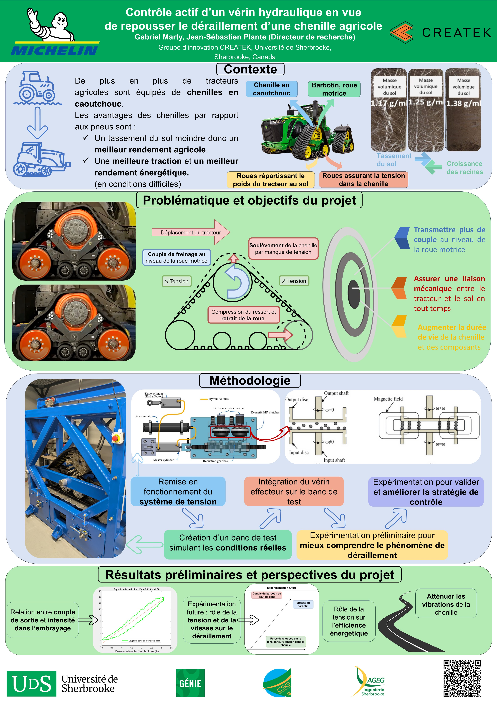
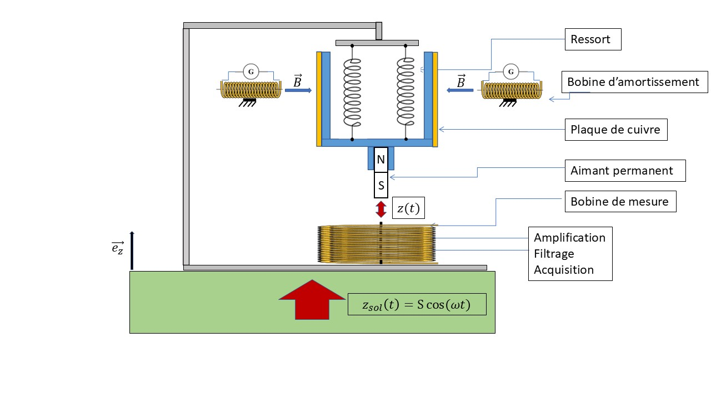

Bonjour, je suis Gabriel Marty, étudiant prédoctoral en génie mécanique. Bienvenue sur mon site personnel qui regroupe mes projets, mes formations et bien plus…
Voici les projets principaux que j'ai réalisés :


Remplissez le formulaire ci-dessous pour m'envoyer un message.